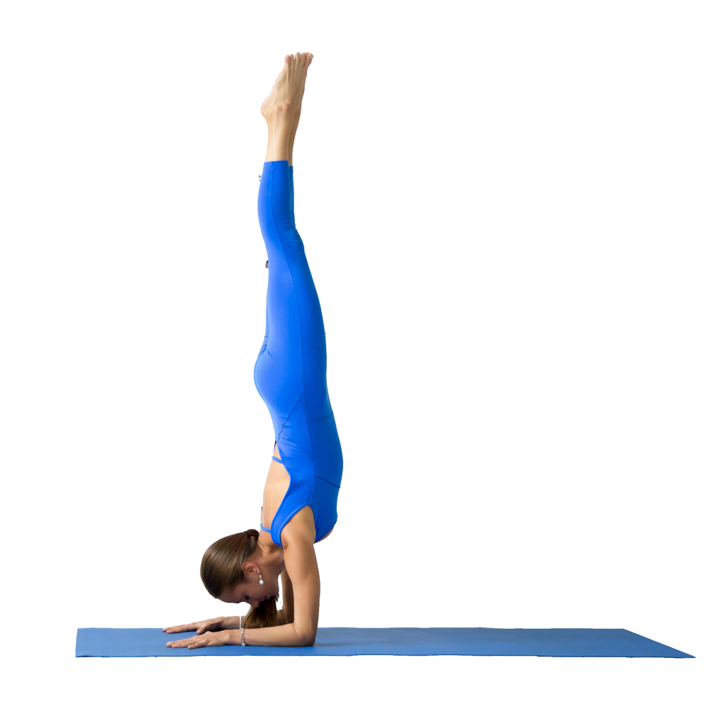

Arm Balance – Pincha Mayurasana

The Arm Balancing yoga poses are an advanced poses. This particular one helps you with the blood flow throughout your body; it calms your mind and it strengthens your arms. If you yet cannot do it as shown, you can always use the wall for support and the benefits are the same.